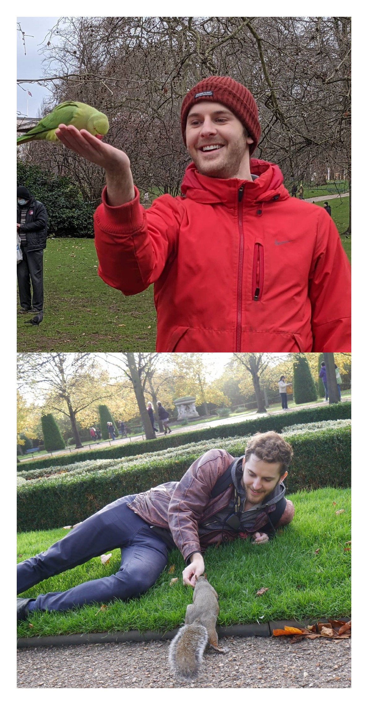
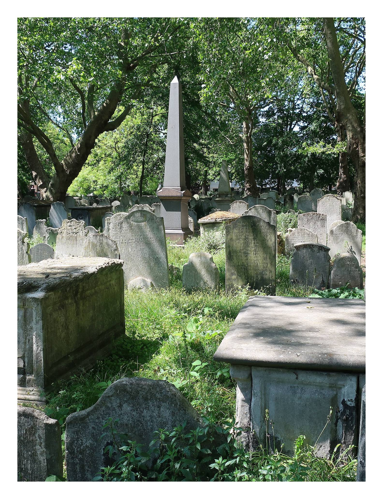

Vote Maxx
for councillor
Bunhill, EC1
Thu, 6 May
-
Call Maxx
+44 (0) 7482 315 084 -
Email Maxx
yes@votemaxx.com -
Follow Maxx
🙌 🗳️ ✅
A Local Election Is Happening On May 6
Following the mid-term resignation of Cllr Claudia Webbe on Mon, 22 Mar 2021, one Bunhill councillor seat is now up for election on Thu, 6 May 2021. I would love your support. 🙏
Here's why you should vote for me:
🧑🤝🧑 👑 👪
A Local Champion For Local People.

EC1 Mural - Chequer Street near Quaker Gardens.
I've been living and working in the Bunhill area for 5 years.
I'm the local candidate that Bunhill needs and deserves.
The other candidates don't have the passion for the local area that I do. Labour's candidate lives in Highbury - a 1h walk away from our area!
-
🌹 Labour Candidate
Valerie Bossman-Quarshie
Based: Highbury (N5)
❌ Not in Bunhill -
🌳 Conservative Candidate
Zak Vora
Based: Essex Road (N1)
❌ Not in Bunhill -

-
🕊 Liberal Democrat Candidate
Maxx Turing
Based: Percival St Estate (EC1)
✅ Lives in Bunhill
✅ Works in Bunhill
✅ Council leaseholder
😥 😞 😭
Labour Has Let You Down.

Cllr Claudia Webbe will be attending Westminster Magistrates' Court again on 27 Sep 2021.
The local Islington Labour party are taking you for granted.
🔪 😨 🚗💨
Make Bunhill Safe.
Nicholas Henry (33) - stabbed to death.
Jun 23, 2012 in Charterhouse Street, Farringdon.
Steve Narvaez-Jara (20) - stabbed to death.
Jan 1, 2018 in Bartholomew Court, Old Street.
Imagine a Bunhill free of lethal crime and health hazards.
A safe place for you and your family.
🌳 🌍 💚
Care For Bunhill's Environment.

I'm a big lover of the natural world. You can view some of my hobby nature photography here.
When we care for the environment, we care for ourselves.
I want Bunhill to be a clean and safe place to live for all.
Did you know that 4 out of the top 5 greenest councils are run by Liberal Democrats?

Recycling bins overflowing on the corner of Bath Street and Galway Street.
👋 😄 👨💻
Who Am I? Get To Know Me!
Maxx at The Microsoft Reactor, Wilson St - on the edge of Bunhill - taking part in an entrepreneurial leadership programme alongside Victoria Collins, who is also running for a local councillor seat in the May elections for St Peter's ward.
👋 Hi! I'm Maxx Turing. I'm a creative problem solver and I like to get things done.

{kind=link}
I grew up in a London commuter town where I attended a local comprehensive. Due to coming from a low-income household, I received 100% busaries and grants to attend the University of Oxford, where I studied Cell and Systems Biology.
After graduating, I decided to pursue a career in the London tech startup scene and in Oct 2020 I quit my startup job during the pandemic to run my own company called The Tribe, a startup that provides tech products and services for entrepreneurship support programmes - helping entrepreneurs to succeed.
{kind=link}
Over the course of my career, I've used my skills and experience to help support over 1000 entrepreneurs to start and grow their own businesses. Now I'm keen to give back to my local area - I want to leverage my experience and problem solving skills to solve the local issues we face in Bunhill.
You can read more about my background and career on my personal website here:
maxxturing.com.
🤔 📍 🗳️
Where Exactly Is Bunhill?

Bunhill ward's name is in reference to Bunhill Fields, near Old St roundabout. The word Bunhill derives from "Bone Hill", a fitting name given its use as a burial ground for 100s of years. 💀⛰️🦴
Bunhill is the most south-eastern electoral ward in the London Borough of Islington.
If your postcode starts with EC1A, EC1M, EC1V, EC1Y, EC2A, EC2M or EC2Y...
...then you might live in Bunhill! Unsure? Check out the map below:
Bunhill borders the following areas:
🤔 ❓ 🗳️
Can I Vote?
British, Irish, EU, and qualifying Commonwealth citizens living in Bunhill, Islington can register to vote.
If you haven't registered to vote yet, you can do so using the button below:
If you're already registered, you can apply to vote early using a postal vote...
🙌 ✉️ 📮
Request A Postal Vote

📞 ✉️ 📱
Get In Touch
What local issue do you care about? I'll get back to you ASAP - I want to help.
© Published and promoted by Josh Hadley at 23 Penn Road, London, N7 9RD on behalf of Maxx Turing (Liberal Democrats).